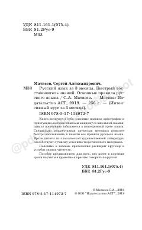

РЯRus tili imlosi va punktuatsiyasini tezkor o'rganish uchun amaliy qo'llanma.
Ushbu qo'llanma rus tili imlosi va punktuatsiyasi bo'yicha asosiy qoidalarni tezkor tiklash uchun mo'ljallangan. Muallifning maxsus metodikasi va klassik adabiyotdan olingan namunalar yordamida o'quvchilar qisqa vaqt ichida savodxonlik darajasini oshirishlari mumkin.